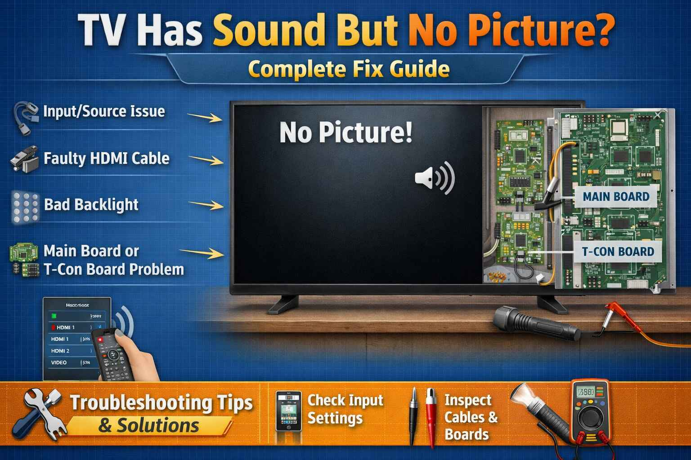

A family from Kandiaro called me in February 2004. They said "Our Sony TV has sound but no picture. The screen is completely black. We can hear the news but cannot see anything." I asked them to perform the flashlight test. They shined a bright light on the screen and saw a faint image. The backlight had failed. They called a technician who replaced the LED strips for 5000 rupees. The TV worked again. The father said "Thank you for telling us what was wrong before we called anyone."
Brand: Sony | Problem: Sound but no picture | Fix: Replace backlight LED strips
TV has sound but no picture? This is one of the most common TV problems. You can hear audio, but the screen remains black. Do not worry. In many cases, this can be fixed without calling an expensive technician. This guide will help you diagnose and fix the problem step by step.
First Thing to Do - The Flashlight Test: Shine a bright flashlight closely at the TV screen. If you see a faint image like a ghost image, then your backlight has failed. If you see absolutely nothing, the problem is with the main board, T-con board, or panel.
A school teacher from Shahdadpur called me in June 2006. He said "My LG TV is showing 2 blinking lights. The TV turns on for a second and then turns off. It keeps repeating this cycle." I asked him to check the power supply board. He opened the back and found three capacitors with bulging tops. He replaced them with new ones for 300 rupees. The TV started working normally. He said "I saved 6000 rupees by fixing it myself. Thank you for your guidance."
Brand: LG | Error: 2 blinks | Fix: Replace bulging capacitors on power supply
Result 1: If you see faint images, the backlight has failed. Go to Fix number 1.
Result 2: If the screen is completely dark, the issue is with the main board, T-con board, or panel. Go to Fix numbers 2, 3, or 4.
A shopkeeper from Tando Muhammad Khan called me in September 2008. He said "My Samsung TV has sound but no picture. The flashlight test shows a faint image. Is the backlight repairable?" I told him yes, the LED strips can be replaced. He called a technician who replaced the strips for 4500 rupees. The TV became like new. He said "You saved my business. I watch the news on this TV every day in my shop."
Brand: Samsung | Problem: Backlight failure | Fix: Replace LED strips
Symptoms: You hear sound, but the screen is black. The flashlight test shows faint images. This means the LEDs that light up the screen have failed.
What is happening: LCD TVs need a backlight to make the picture visible. If the LED strips fail, you get sound but no picture.
Solutions: This requires opening the TV and replacing the LED strips. LED strips are available online. Search for your TV model followed by LED strips. Replacement parts cost 2000 to 5000 rupees. Professional service costs 4000 to 8000 rupees total.
Warning: Opening the TV requires care. The screen is very fragile. If you are not confident, hire a professional.
Symptoms: No picture even with the flashlight test. You may see lines or a distorted image. Half the screen may work while the other half does not.
What is happening: The T-con board sends signals to the display panel. If it fails, no picture appears.
Solutions: Try reseating the ribbon cables. Unplug the TV, then remove and reconnect the cables. Clean the ribbon cable contacts with alcohol. If that does not work, the T-con board may need replacement. T-con boards cost 2000 to 6000 rupees depending on the model.
A doctor from Sehwan called me in April 2010. He said "My Panasonic TV has sound but no picture. The flashlight test shows nothing. What could be wrong?" I asked him to check the ribbon cables. He opened the TV and found one ribbon cable was not fully seated. He pushed it in until it clicked. The picture came back. He said "I am a doctor but I did not know about this. Thank you for teaching me."
Brand: Panasonic | Problem: Loose ribbon cable | Fix: Reseat cable properly
Symptoms: No picture. The TV may not respond to the remote properly. There may be other issues besides no picture.
What is happening: The main board processes all inputs and controls the TV. If it fails, the picture may be absent.
Solutions: Try unplugging the TV for 10 minutes, then plug it back in. This resets the TV. If that does not work, the main board likely needs replacement. Main boards cost 4000 to 10,000 rupees depending on the TV model. Professional installation is recommended.
Symptoms: The TV turns on then off. Or there is sound but no picture. Or you hear clicking sounds from the TV.
What is happening: The power supply board may not be providing the correct voltages to the other boards.
Solutions: Check for bulging capacitors on the power board. Bulging capacitors have swollen tops. Capacitors can be replaced by a technician. This is a cheap fix. Or the whole power board can be replaced. Power board replacement costs 3000 to 7000 rupees.
A businessman from Hala called me in December 2012. He said "My TCL TV has sound but no picture. The flashlight test shows nothing. The TV is only 2 years old." I asked him to check the T-con board. He opened the TV and found the T-con board had a burnt smell. He ordered a replacement board online for 3500 rupees. He installed it himself. The picture came back. He said "You diagnosed the problem correctly. I am very grateful."
Brand: TCL | Problem: Burnt T-con board | Fix: Replace T-con board
Symptoms: No picture, or the picture comes and goes, or there are lines on the screen.
What is happening: Ribbon cables connecting the boards can become loose due to heat or vibration over time.
Solutions: Unplug the TV and open the back panel. Locate the ribbon cables. These are flat, wide cables between the boards. Carefully disconnect and reconnect each one. Ensure they are fully seated and latched. This simple fix often solves the problem for free.
Symptoms: No picture at all. Or there are lines on the screen. Or half the screen is working. Or there is physical damage visible.
What is happening: The actual LCD or OLED panel itself is damaged or has failed.
Solutions: Unfortunately, panel replacement is usually not economical. A new panel often costs more than a new TV. If the panel is confirmed to have failed, consider buying a new TV. Look closely for cracks, lines, or damage to the screen surface.
Many TVs show error codes through blinking power LEDs. Count the number of blinks to identify the problem.
| Brand | 2 Blinks | 3 Blinks | 4 Blinks | 5 Blinks | 6 Blinks |
|---|---|---|---|---|---|
| Samsung | Power supply | Main board | Backlight | T-con board | Panel |
| LG | Power supply | Main board | Backlight | T-con board | Panel |
| Sony | Power supply | Audio board | Backlight | Main board | T-con or panel |
| Panasonic | Power supply | Main board | Inverter | T-con | Panel |
Note: Prices vary by city and TV model. Get quotes from 2 to 3 technicians.
Pakistan Specific Tips: Use a voltage stabilizer to protect your TV from power fluctuations, which are common in Pakistan. Keep the TV vents clean to prevent overheating. In coastal areas like Karachi, moisture can damage boards. Keep the TV in a well ventilated area. Many cities have specialized TV repair shops. Ask for recommendations from friends and family.
Safety Warning: TVs contain high voltage components even when unplugged. Power supplies can hold dangerous charges. Only open the TV if you know what you are doing. When in doubt, call a professional.